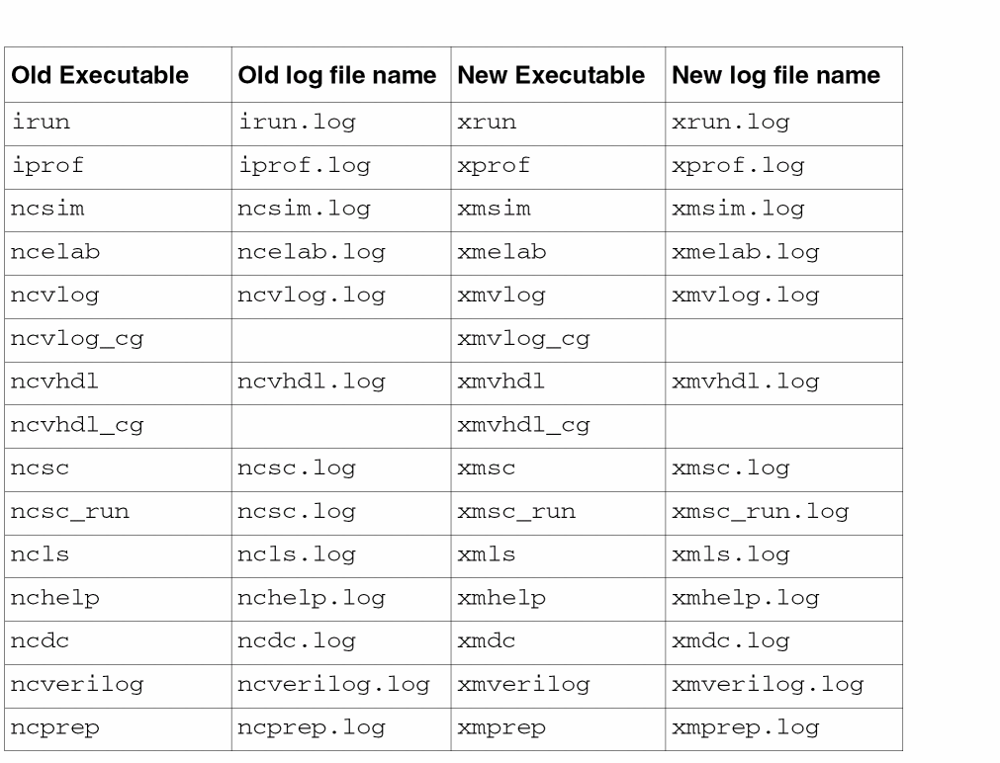

C
Running Simulations with Xcelium
You can also simulate and debug your designs using the Xcelium simulator. With this simulator in place, all the executable names, log file names, and output directory names have been changed. However, the old executable and log file names will continue to work for other simulators.
The following table lists the changes in the executable and log file names when using the Xcelium simulator:

Return to top